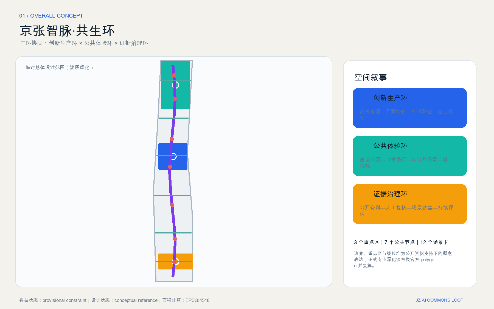
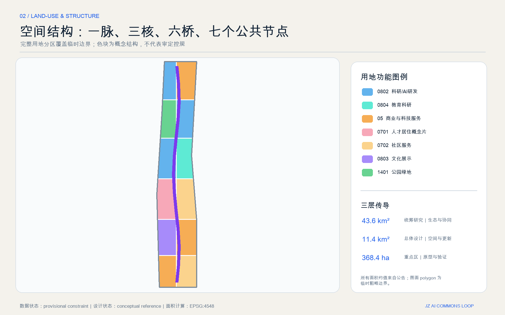
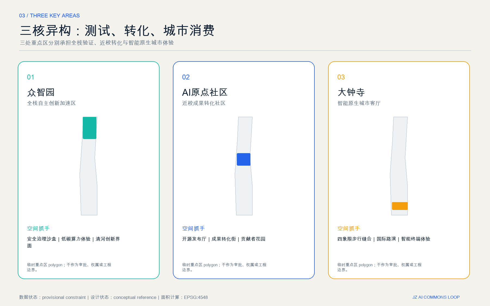
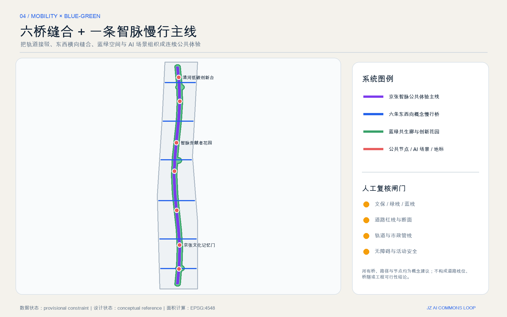
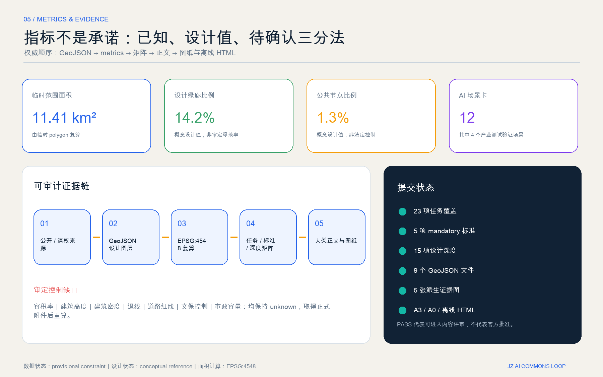

人工审核发布与贡献记录
核心指标
临时范围复算11.41 km²非 official redline
设计绿廊比例14.2%非审定绿地率
公共节点比例1.3%非规划控制值
概念慢行线网16.0 km工程线位待核
总览地图

三层范围与用地分区

三层传导
- 统筹研究范围：产业生态与未来城市机制。
- 总体设计范围：空间结构、城市更新与设施支撑。
- 重点区域：差异化原型、场景和人工复核。
用地分区完整覆盖临时总体设计范围，但不等同于审定控规。
重点区域

众智园
全栈验证、安全治理与低碳创新界面。
AI原点社区
近校成果转化、开源协作与人才服务。
大钟寺
智能原生消费、商务、国际路演与四象限缝合。
交通慢行 × 蓝绿公共空间

六条东西向概念慢行桥不构成道路、桥隧或工程线位结论；需经道路红线、轨道、市政、文保、无障碍和活动安全专项复核。
建筑与更新项目
载体原型
20个左右的小尺度建筑基底仅表达“保留或改造优先”的可逆载体，不对应具体产权地块。
三阶段
近期公共界面与场景试点；中期重点区协同更新；远期全带证据治理与生态运营。
前置闸门
官方边界、控规、权属、现状建筑、文保、交通、市政与运营主体。
AI 场景
12张场景卡全部设置最小数据、人工复核、可撤回或线下兜底，其中02、03、04、05为产业测试验证场景。
产业测试｜红队与评测
产业测试｜能耗上限与人工停机
产业测试｜封闭时段与安全员
产业测试｜授权、审计、可撤回
匿名聚合、无个体追踪
人工复核与公众反馈
法务、知识产权与首购验证
最小数据与线下兜底
水文与生态专项前置
可解释荣誉与申诉机制
活动许可与流量分级
全球案例转译
以下公开案例只用于机制类比，不直接移植规模、指标、企业或政府承诺。
- one-north｜多片区共址
- Knowledge Quarter｜机构联盟
- STATION F｜遗产再利用
- Maria 01｜社区驱动渐进更新
- MaRS｜科研到市场平台
任务覆盖与自检状态

任务覆盖：公告1.3、1.4、1.5共17项，以及agent.1—agent.6全部映射到正文、GeoJSON、指标、A3/A0与本页。自检状态以提交目录中的 self_check.json 为准；PASS 只代表具备进入内容评审的机器基础，不代表官方批准。
来源与假设
来源
formal 主依据为官方公告、清权智能体任务书、本地标准快照与 source registry；边界与重点区仅使用仓库 provisional geometry。国际案例来自各运营机构公开网页，仅作背景机制类比。
假设
官方 polygon、审定控规、道路红线、权属、建筑底数、文保、市政和公共服务容量缺失。相关判断均降级为概念建议并设置重算条件。